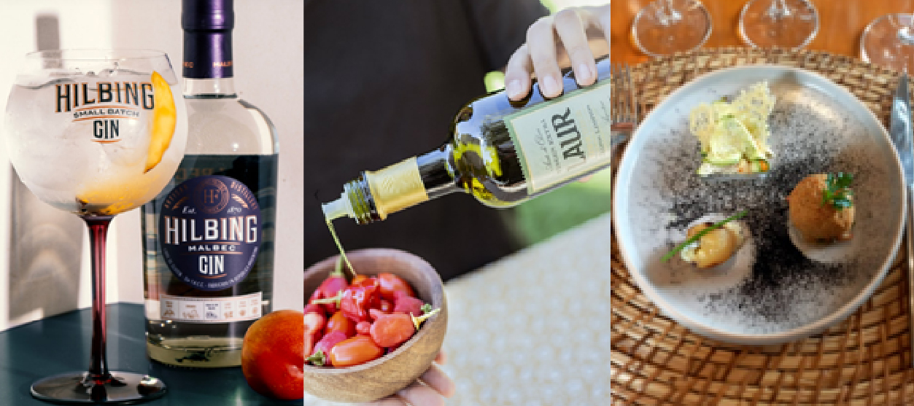
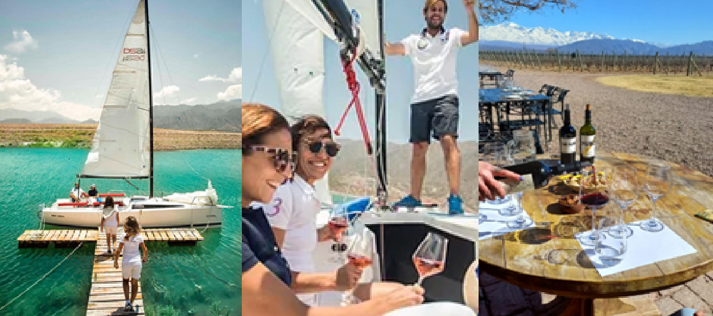
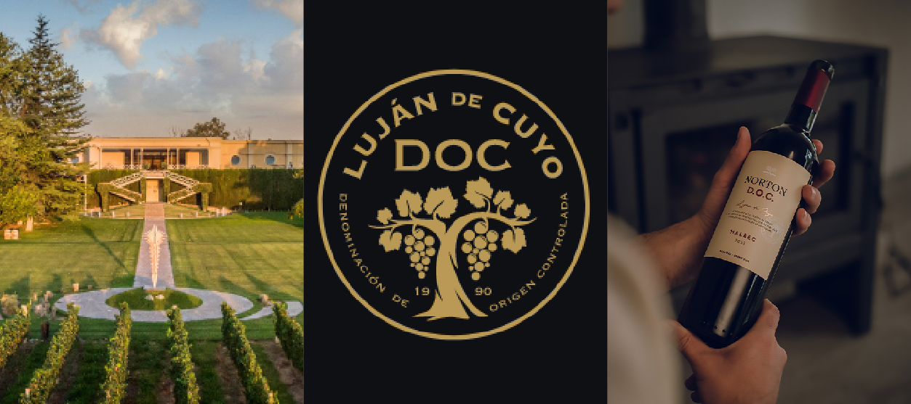

Filtrar por:
Excursiones

Alta Montaña y Puente del Inca
Excursión de día completo por la cordillera de Los Andes.
Excursión de día completo a la cordillera de Los Andes. Se pasará por los valles de Potrerillos y Uspallata, el centro de ski Los Penitentes, el Puente del Inca y el mirador del Cerro Aconcagua, hasta llegar al límite con Chile, en Las Cuevas (3.200 mts).
Incluye:
- Guía bilingüe
- Transporte en modernas unidades
No incluye:
- Almuerzo
Días y horarios: Lunes a domingos, de 07:30 hs a 20:00 hs.
Recomendaciones: Ropa de abrigo, calzado cómodo, protector solar y lentes de sol.
Contratar experiencia por WhatsApp!
Tour de Bodegas
Recorrido de medio día visitando dos bodegas y una fábrica de aceite de oliva.
Tour de vinos de medio día. Se realizan visitas a dos Bodegas con degustaciones de vinos, buscando encontrar un contraste entre las mismas. Posteriormente, se visitará una fábrica de aceite de oliva, donde podrás disfrutar de sus productos.
Incluye:
- Entradas y degustaciones
- Guía bilingüe
- Transporte en modernas unidades
No incluye:
- Almuerzo
Días y horarios: Lunes a sábados, de 14:30 hs a 19:00 hs.
Recomendaciones: Calzado cómodo, protector solar y lentes de sol.
Contratar experiencia por WhatsApp!
Cañón del Atuel y San Rafael
Excursión de día completo por el Cañón del Atuel y San Rafael.
Descubre el sur de Mendoza, allí serás sorprendido por la belleza del Cañón del Atuel, con una explosión de colores y exóticas formaciones rocosas junto a espejos de agua. Luego de un recorrido por la ciudad de San Rafael se regresa al centro de Mendoza..
Incluye:
- Guía bilingüe
- Transporte en modernas unidades
No incluye:
- Almuerzo
- Actividades de rafting y catamarán
Días y horarios: Jueves y domingos, de 07:00 hs a 21:00 hs.
Recomendaciones: Traje de baño, muda de ropa, calzado impermeable, protector solar y lentes de sol.
Contratar experiencia por WhatsApp!
City Tour Mendoza
Recorrido por el casco histórico y principales atractivos de Mendoza.
Explora Mendoza visitando el casco histórico, plazas principales, Área Fundacional, Paseo "La Alameda", Casa de Gobierno, Parque General San Martín y el mirador del Cerro de la Gloria.
Incluye:
- Guía bilingüe
- Transporte en modernas unidades
No incluye:
- Almuerzo
Días y horarios: Martes, jueves y sábados, de 08:30 hs a 12:30 hs.
Recomendaciones: Calzado cómodo, protector solar y lentes de sol.
Contratar experiencia por WhatsApp!
Reserva Villavicencio
Excursión de medio día para conocer y fotografiar la Precordillera y la Quebrada de Villavicencio, de la mano de guías locales de la reserva.
Allí podrás tomar fotos de la quebrada de Villavicencio desde la altura; y conocerás el Casco Histórico del Hotel Villavicencio y sus jardines, de la mano de guías.
Incluye:
- Guía bilingüe
- Transporte en modernas unidades
No incluye:
- Entrada y visita a los jardines e inmediaciones del hotel
Días y horarios: Miércoles y sábados, de 08:00 hs a 13:30 hs.
Recomendaciones: Ropa de abrigo, calzado cómodo, protector solar y lentes de sol.
Contratar experiencia por WhatsApp!
Valle de Uco y Cordón del Plata
Recorrido por el Valle de Uco con paradas panorámicas y visita a bodegas.
Disfruta de un día en el Valle de Uco: visita el punto panorámico de Cristo Rey, el Manzano Histórico, el corredor productivo y realiza una visita a Bodega Atamisque (degustación no incluida). Además, tendrás almuerzo en un restaurante criollo (no incluido).
Incluye:
- Guía bilingüe
- Transporte en modernas unidades
No incluye:
- Almuerzo
- Entrada a Bodega Atamisque
Días y horarios: Viernes, de 08:00 hs a 18:00 hs.
Recomendaciones: Ropa de abrigo, calzado cómodo, protector solar y lentes de sol.
Contratar experiencia por WhatsApp!
Bodegueando entre Vinos y Tradición
Tour que incluye visita a una destilería y dos bodegas (Norton o Chandon, Carmine Granata, Hilbing & Franke), con degustación y almuerzo en bodegón.
Explora la tradición vitivinícola visitando una destilería y dos bodegas. Disfruta de un almuerzo en bodegón que incluye una gran picada de quesos, fiambres, encurtidos, verduras asadas, tapas calientes, bebidas (vino Malbec 2020, gaseosa y agua) y un delicioso postre.
Incluye:
- Guía bilingüe
- Transporte en modernas unidades
- Visita a 3 bodegas con degustación
- Almuerzo en bodegón
Días y horarios: Martes, jueves y sábados, de 08:00 hs a 17:00 hs.
Recomendaciones: Calzado cómodo, protector solar y lentes de sol.
Contratar experiencia por WhatsApp!Wine Tours

Degustando Mendoza
Degusta gin premiado, aceite de oliva de élite y vinos maridados en un recorrido único por Mendoza.
Explora los sabores de Mendoza: degusta el premiado gin de Hilbing Franke, prueba el aceite de oliva extra virgen de Laur, y disfruta un menú maridado con vinos en una prestigiosa bodega.
Incluye:
- Visitas guiadas y degustaciones en destilería y aceitera (o similares)
- Almuerzo con menú de pasos maridado en bodega Trivento, Monte Quieto o similar
- Vehículo de alta gama con chofer profesional
- Salidas de lunes a sábado

Vinos de Altura
Degusta vinos de altura, visita bodegas exclusivas y disfruta un almuerzo maridado en un viaje único por Valle de Uco.
Explora Valle de Uco en un recorrido único: degusta vinos de alta gama cultivados a más de 1.000 m.s.n.m., visita bodegas exclusivas y disfruta un almuerzo maridado en un entorno mágico.
Incluye:
- Visitas guiadas y degustación en dos bodegas (ej. Andeluna, Familia Blanco, etc.)
- Menú de pasos maridado en una tercera bodega (ej. Andeluna o La Azul)
- Vehículo de alta gama con chofer profesional
- Salidas de lunes a domingo

Velas & Wines
Almuerza en Ojo de Agua con vistas a los Andes y navega a vela en Potrerillos degustando vinos de garage.
Descubre Luján de Cuyo con un almuerzo maridado en la bodega Ojo de Agua y, luego, navega a vela en Potrerillos mientras degustas vinos de garage.
Incluye:
- Paseo en embarcación a vela con degustación (opcional: tabla de picada)
- Charla técnica
- Vehículo de alta gama con chofer profesional
- Salidas de lunes a viernes

Caminos del Malbec D.O.C.
Descubre el Malbec D.O.C. en bodegas de Luján y disfruta un menú maridado.
Explora Luján de Cuyo tras las huellas del Malbec D.O.C. y disfruta una experiencia vinícola y gastronómica única.
Incluye:
- Visitas guiadas y degustación en dos bodegas
- Menú de pasos maridado en una tercera bodega
- Vehículo de alta gama con chofer profesional
- Salidas de lunes a sábado